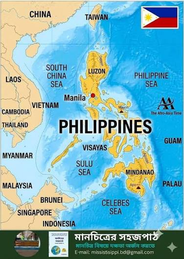
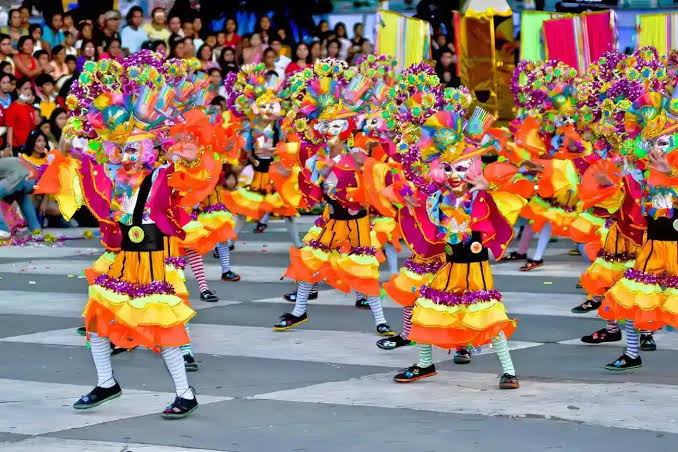
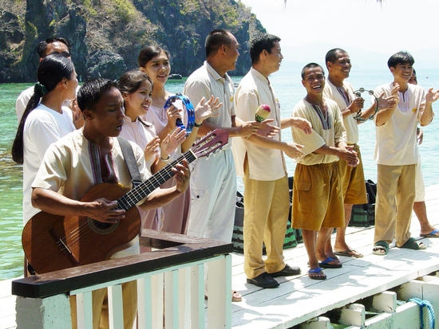
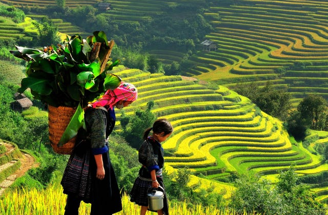
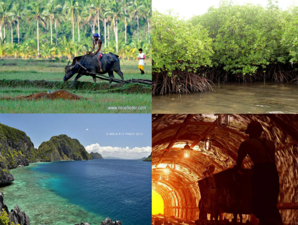

Mabuhay!
Where Every Island Tells a Story
Explore the Philippines and discover its beautiful destinations, amazing landscapes, and rich culture. Every place has a story waiting to be experienced!
Discover the Beauty of Our Country
Where Every Island Tells a Story
Explore the Philippines and discover its beautiful destinations, amazing landscapes, and rich culture. Every place has a story waiting to be experienced!
A country filled with culture, beauty, and endless discoveries.

The Philippines is an archipelago located in Southeast Asia, in the western Pacific Ocean. It consists of more than 7,600 islands divided into three major island groups: Luzon, Visayas, and Mindanao.
The country is known for its tropical climate, beautiful coastlines, mountain ranges, volcanoes, forests, and breathtaking beaches. Its geographical location makes it rich in marine life and natural landscapes.

Filipino culture is a beautiful combination of indigenous traditions and Asian, Spanish, and American influences. Filipinos celebrate colorful festivals called fiestas, practice traditional dances, wear cultural clothing, and enjoy gatherings with family and friends.
Important Filipino values include Bayanihan, which means community cooperation, respect for elders, and strong family relationships. These traditions reflect the identity and heritage of the Filipino people.

Filipinos are widely known for their friendliness, warmth, and hospitality. They value family, friendship, and community, often making visitors feel welcome and comfortable.
Simple gestures such as sharing food, offering help, and greeting guests warmly reflect the Filipino spirit of kindness and generosity. Visitors are often welcomed with smiles and genuine care.

The Philippines offers countless destinations for travelers who love adventure, relaxation, and cultural exploration. Visitors can discover the ancient Batad Rice Terraces, the fascinating Hanging Coffins of Sagada, and the beautiful beaches of Boracay.
Other famous destinations include the breathtaking lagoons of Palawan and the Chocolate Hills of Bohol. Each destination offers a unique experience and a glimpse into the country's beauty and heritage.

The Philippines is blessed with abundant natural resources, including forests, fertile agricultural lands, rivers, minerals, and rich marine ecosystems.
It produces resources such as gold, copper, and nickel. Its seas are home to diverse fish species and coral reefs, while its forests provide habitats for unique wildlife. These resources support livelihoods, agriculture, fisheries, tourism, and the country's economy.
Protecting these natural resources is important to preserve the beauty and biodiversity of the Philippines for future generations.
Capital City: Manila
Region: Southeast Asia
Island Groups: Luzon, Visayas, and Mindanao
Currency: Philippine Peso (₱)
Official Languages: Filipino and English
Climate: Tropical
The Philippines is more than just a tropical destination. It is a country filled with extraordinary landscapes, colorful traditions, diverse communities, and welcoming people. Every island has its own story, and every journey offers something worth remembering.